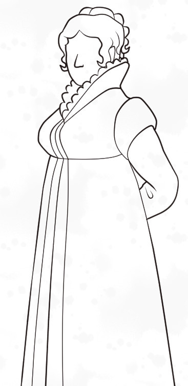
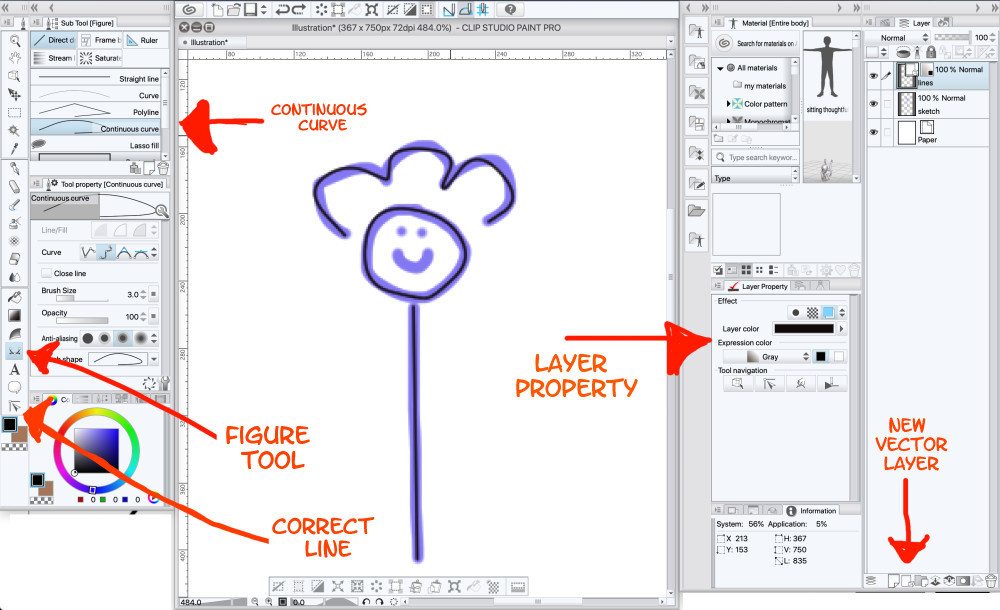
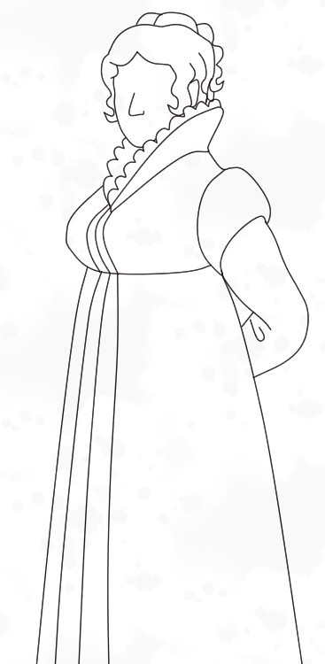
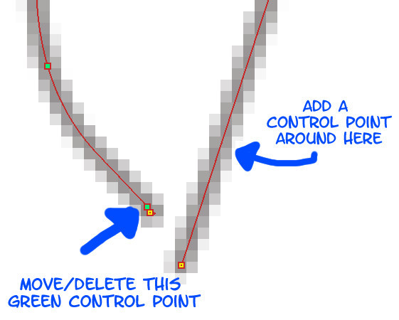

Drawing consistent, organic looking linework with Clip Studio Paint
Tags: posts, from dreamwidth, clip studio paint, sprites, tutorial, art,
This is mostly for my own future reference. I imagine you could do basically the same thing in any decent art program, but the specifics would vary.
An example of linework made using this method:

Various features mentioned below, right click for larger image: 
Step 1: Create a Clip Studio file with a sketch of your sprite. I have a sprite generator if that would help. My sprites are 367x750 pixels.
Step 2: Create a vector layer.
Optional: Go to "Layer Property".
- As in the link above, set the "expression colour" to greyscale and only select black. That way if you accidentally use the wrong ink colour it won't mess anything up.
- Select the "layer colour" button and set it to a dark colour. I use #130A0B, which is a very dark red.
Step 4: Select Figure ->Direct Draw -> Continuous Curve and set it to your default line width. I use 3 pixels.
In your vector layer, trace over your sketch with the "continuous curve" tool, clicking to set control points for the curve every now and then. It will probably look a bit wonky. Double click to end a line, or connect back to the start of a line to create a loop.
Step 5: Select Correct Line -> Control Point -> Add Control Point. Now when you click on a control point, you can drag it to a new position. If you click on your line where no control point exists, one will be added. You can also delete control points with Correct Line -> Control Point -> Delete Control Point.
Zoom in on the lines you drew in Step 4 and add/move/delete control points until the lines match your sketch and look smooth. If you need to create jagged or pointy lines, put two control points close together or use Correct Line -> Switch Corner. Turn off the sketch layer and keep tweaking until you're happy.
2019-11-08
Example of linework at this stage: 
If you like, you can stop here. You will have neat but rather bland lines. If you want something more organic, keep going!
Step 6: Select Correct Line ->Correct Line Width, then select "Fix Width" and set it to slightly larger than your default line width. I use 4 pixels. Trace the outside of your sprite, and any other significant edges. If necessary you can also tweak the width of individual points as described below.
Step 7: The end of any vector line that isn't a loop is marked with yellow, while all other control points are usually green. For every line you want to end in a point, make sure that there's a green control point near the end, but not right next to it.
Step 8: Select Correct Line -> Control Point -> Adjust Line Width. Click on the yellow end point of each line you want to make pointy, and shrink its width down to nothing.
Step 9: Tweak the width of any other points that would suit it. It's good to vary the width of straight lines a little to make them look less artificial.
And now your linework is done!
The linework above after being tweaked: